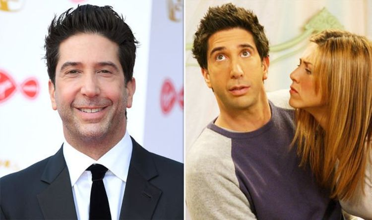

Friends:¿Quien es el peor personaje principal?.
Un tema que me a atormentado desde hace un tiempo es el de ¿que personaje de la serie es el peor o el mas horrible como persona? por que tengo que admitir que todos tienen su estilo su carisma y lado negativo pero,pienso que es hora de explorar y explicar quien es para mi el peor personaje.

Creo que al final de toda esta explicación tal vez digas que me equivoco o que tal vez no soy un fanático real de una de las mejores sitcoms de toda la historia de televisión y si tal vez tengan razón pero creo que tengo el conocimiento y la ayuda suficiente para tener hasta cierto punto la razón.
El odio hacia Ross
Algo de lo que me he percatado en todo este tiempo y lo que he visto también en otras paginas web y vídeos...es que el publico mas actual (juvenil) es las diferentes encuestas catalogan a Ross Geller como el peor personaje y la verdad pienso que esa gente esta muy equivocada...tal vez sea por su torpeza en ciertas escenas o tal vez sus extremos ataque de celos cuando ve Rachel con otro chico...pero no quiero justificar a Ross ni menos decir que es el mejor personaje...pero pienso que tal vez su papel de hacerse la victima es totalmente real y es algo que explicare mas adelante con otro personaje. .
¿Los demás personajes son malos?
Aqui es donde entran en discordia los demás personajes,quienes son Chandler ,Monica, Rachel y Joe (Ya se imaginaran de quien hablare después) Creo que todos tienen un carisma impresionante y natural. Joe es para mi el personaje mas gracioso de la serie el que le ese toque de humor tonto que hace que la serie muy buena. Chandler (Mi personaje favorito)por su parte creo que llega a ser lo mejor de la Serie su carisma y mal sarcasmo hacen que haya escenas muy divertidas y geniales y creo que algo que me molesto en un episodio en el que Rachel y Joe salen, Joe le pregunta si a quien de los 6 amigos golpearía y ella contesta que a Chandler aunque no sabe por que, y creo que algo parecido sucede con el a igual que Ross llega a ser la victima o el objeto de Burla de Phoebe y otros. Monica aunque no es el mejor personaje de la serie creo que también tiene su lado bueno, su ganas de casarse y tener una familia se iban derrumbando mientras avanza la serie donde vimos diferentes parejas entre ellos tal vez el segundo mayor amor de su vida Richard Burke, uno de los mejores amigos de su padre...pero que al final descubre que su verdadero amor es Chandler y creo que algo que odio de ella es que llega a ser muy competitiva y mala perdedora y un poco perfeccionara. Y también esta Rachel que aunque al principio llega a ser una persona materialista y con una muy buena economía para mi hay una muy buena evolución del personaje en la serie que hace que se pueda valer por si mismo (a diferencia de sus hermanas ella) y que tiene un cierre en el final de friends que aunque ya estaba mas que predecido esperábamos con asías terminar definitivamente junto a Ross.
{kind=link}
Phoebe el peor personaje
Ahora si el momento que estaban esperando ¿Quien es el peor personaje? y la respuesta es "Phoebe". Creo al final es ella la peor, pero no estoy seguro si personaje...tal vez como persona si sea la peor de los amigos y se nota en escenas donde tiene una gran desconsideración con los sentimientos de sus amigos y en especial Chandler que siempre busca de alguna forma Burlarse de el....Y es que aunque al principio de la serie es un personaje con un gran carisma y muy dulce a medida que avanza la serie se vuelve muy fría y es que tal vez la justificación mas grande para el personaje sea el hecho de su difícil infancia y adolescencia la hacen tener muchas razones para ser así.Y si como decía antes como personaje es muy buena pero como persona llega a ser horrible. Es que la razón es esta ella siempre se molesta si sus amigos les cancelan una cita o un cena..pero ella no tiene ningún reparo en cancelarlas. Y como decía antes el personaje de Ross si llega ser la victima, por que Phoebe le guarda rencor aunque este no sepa por que y siempre le reproche cosas como al igual dice ser veterinaria y creer en los derechos de los animales pero llega a cargar con un abrigo de piel de animal como si nada....y podria seguir y seguir pero creo que eso es lo mas importante.
{kind=link}
Pero creo que al final cada uno decide que personaje es mejor y personaje es peor. Y como dije al principio todos tienen sus defectos y sus virtudes que los hacen especiales para la trama y aunque Phoebe tal vez sobre en el grupo de amigos pienso que es importante para ella.